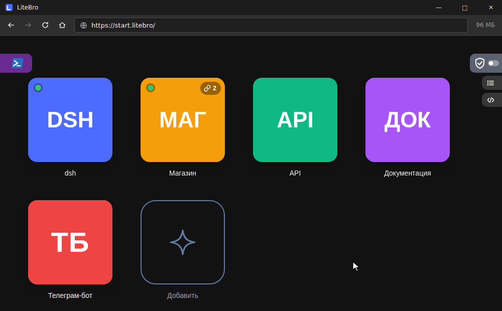

Лёгкий браузер для локальных проектов A light browser for local projects
Плитки ваших проектов, консоль и терминал, журнал сети и режим «только localhost». На движке Edge, который уже есть в Windows, и с меньшим расходом памяти, чем Chrome: ресурсы остаются вашим программам. Tiles for your projects, a console and a terminal, a network log and a localhost-only mode. Built on the Edge engine Windows already has, and lighter on memory than Chrome, so your own programs keep the resources.

Локальное — здесь, остальное — в ChromeLocal here, the rest in Chrome
Ссылки на localhost, *.localhost и локальную сеть открываются в LiteBro, а остальные сразу уходят в ваш обычный браузер.Links to localhost, *.localhost and your local network open in LiteBro, the rest go straight to your usual browser.
Меньше памятиLess memory
Фоновые вкладки сами отдают память, замораживаются и выгружаются. Хорошо, когда рядом на процессоре работает языковая модель.Background tabs give memory back, freeze and unload by themselves. Handy when a language model runs on the same CPU.
Ничего лишнего наружуNothing leaks out
Без телеметрии. Одна кнопка закрывает выход в интернет, а журнал показывает каждую попытку страницы выйти наружу.No telemetry. One button closes the way to the internet, and the log shows every attempt a page makes to get out.
ВозможностиFeatures
Всё, что нужно при работе с локальным сайтом, — в одном окне.What working on a local site needs, in one window.
Плитки проектовProject tiles
Клик запускает программу проекта, ждёт и открывает его сайт. Зелёная точка — программа работает.A click starts the project's program, waits and opens its site. A green dot means the program is running.
Консоль и терминалConsole and terminal
Живой вывод программы, команды в папке проекта и настоящий PowerShell во вкладке, где работают claude и vim.The program's live output, commands in the project folder and a real PowerShell in a tab, where claude and vim work.
Режим «только localhost»Localhost-only mode
Одна кнопка закрывает интернет. Остаются этот компьютер, локальная сеть и сайты, которые вы разрешили.One button shuts the internet out. This computer, the local network and the sites you allow stay.
Журнал сетиNetwork log
Каждый запрос наружу: куда, с какой страницы, со стеком вызова и IP. Фильтры как в Excel, выгрузка в JSON и CSV.Every request out: where to, from which page, with the call stack and IP. Excel-like filters, export to JSON and CSV.
Заглушки APIAPI mocks
Подставные ответы сервера: фронтенд без готового бэкенда, ошибки 500, пустые списки. Можно сделать из строки журнала.Stand-in server answers: a front end without a back end, 500 errors, empty lists. One click from a line of the log.
Инструменты разработчикаDeveloper tools
Эмуляция телефонов и медленной сети, снимок всей страницы, хранилище сайта, просмотр JSON, сброс кэша сайта.Phone and slow network emulation, full-page screenshots, site storage, a JSON viewer, a site cache reset.
Удобные вкладкиHandy tabs
Две вкладки рядом, закреплённые вкладки, открыть закрытую, все вкладки одной плиткой.Two tabs side by side, pinned tabs, reopen a closed tab, save all tabs as one tile.
Блокировка рекламыAd blocking
uBlock Origin Lite по желанию: скачивается при включении и почти не тратит память.uBlock Origin Lite if you want it: downloaded when you turn it on, and nearly free on memory.
Пока сервер не отвечаетWhile the server is down
Десять мини-игр на странице «Сайт не отвечает»: раннер, змейка, понг, сапёр, косынка и другие.Ten mini-games on the page about a site that does not answer: a runner, snake, pong, minesweeper, solitaire and more.
УстановкаInstall
Три шага, около минуты.Three steps, about a minute.
Скачайте и запуститеDownload and run
LiteBro-Setup.exe ставит браузер в Program Files, нужны права администратора.LiteBro-Setup.exe installs the browser into Program Files and needs administrator rights.
Выберите для ссылокPick it for links
На шаге «Приложения по умолчанию» выберите LiteBro для HTTP и HTTPS. Внешние ссылки всё равно откроются в вашем основном браузере.At the Default apps step pick LiteBro for HTTP and HTTPS. Outside links still open in your main browser.
Добавьте проектAdd a project
Плитка — это адрес, программа, которая его поднимает, и папка. Дальше проект открывается одним кликом.A tile is an address, the program that serves it and a folder. From then on a click opens the project.
Установщик не подписан, поэтому Windows может предупредить о нём: «Подробнее» → «Выполнить в любом случае». Все выпуски — на странице Releases.The installer is not signed, so Windows may warn about it: More info → Run anyway. All versions are on the Releases page.